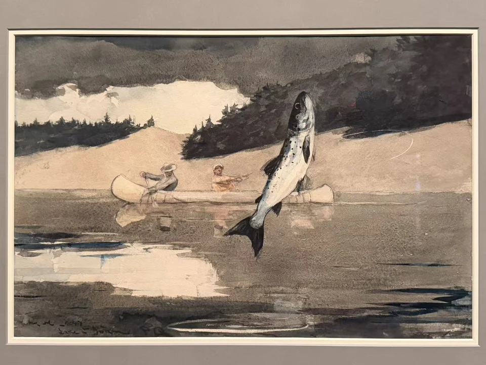
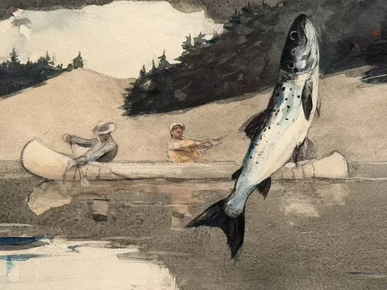

WINSLOW HOMER / LOOK CLOSER
圣让湖钓陆封鲑
Ouananiche Fishing, Lake St. John, Province of Quebec

- 作者／制作者
- 温斯洛·霍默（Winslow Homer）
- 年代
- 1897
- 媒介
- 石墨底稿上施水彩
- 展签原文
- Watercolor over graphite
- 收藏
- 波士顿美术馆
- 编号
- 99.30
- 观看地点
- 休斯顿美术馆 · Of Light and Air
- 入藏来源
- Warren Collection — William Wilkins Warren Fund，1899
在画前
跃起的鱼几乎竖直，腹部的浅色穿过灰褐色水面；后面的独木舟却横着，船上人的动作也被压得很小。鱼线在空中弯出细弧，把前景的跳跃和远处的垂钓接起来。画面的力量来自这几种方向之间的牵扯。
展签说明，ouananiche是加拿大东部的陆封鲑。霍默没有用鲜艳颜色强调它，而让鱼身、水的反光和岸边淡色落在相近的色阶里。近看才分得出哪些是身体，哪些是波纹。捕鱼的故事固然清楚，水彩本身的流动也让这一瞬间难以停稳。
作品信息与文中展签说明据现场展签 ↗。
走近看局部

